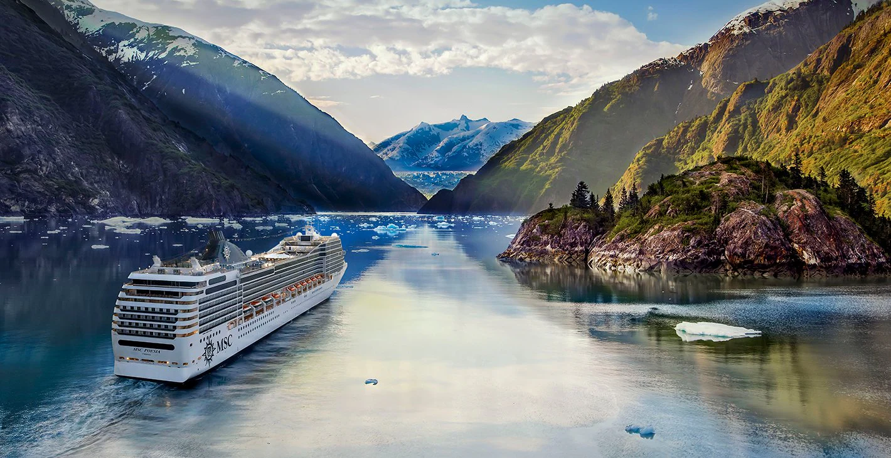
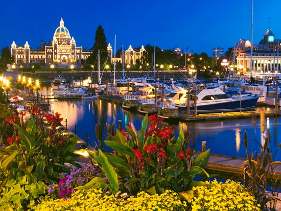

O Canadá é um dos maiores países do mundo, conhecido por suas paisagens deslumbrantes, florestas, lagos cristalinos e montanhas nevadas. Destinos como Toronto, Vancouver, Montreal e Quebec combinam cultura, gastronomia e diversidade. Para quem ama natureza, parques nacionais como Banff e Jasper oferecem cenários incríveis. É o destino perfeito para quem busca aventura, cultura e tranquilidade em um só lugar. Clique em saiba mais
Parque Nacional Banff (Alberta)

Cruzeiro do Alasca
Ilha de Vancouver
